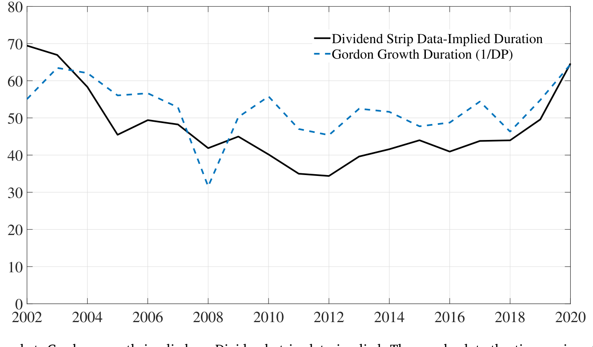
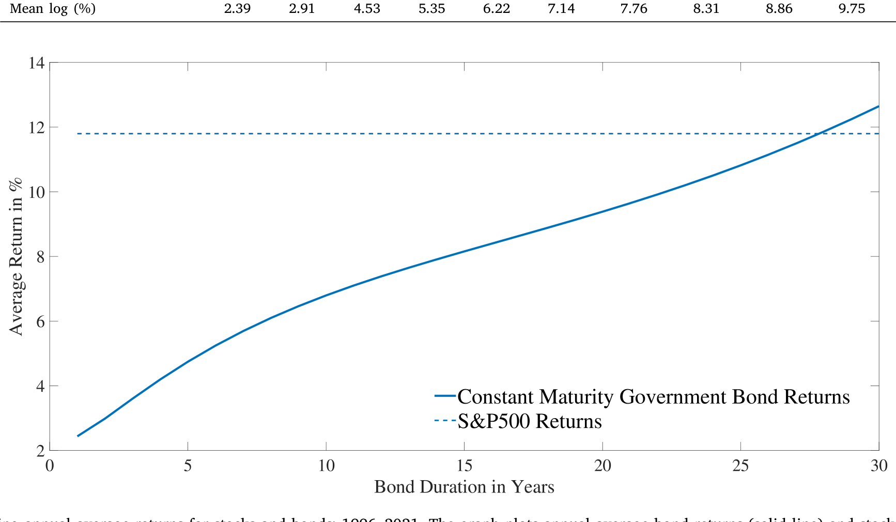
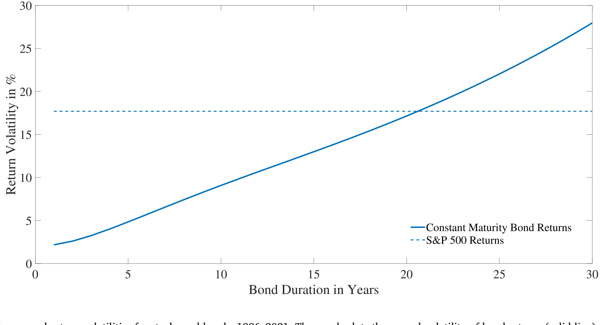
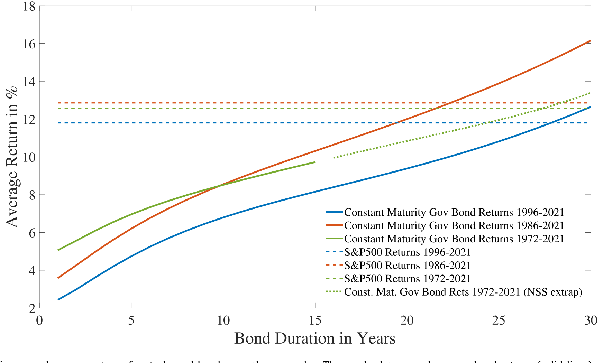
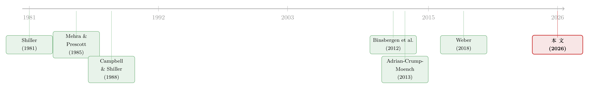

久期错配：当我们把股票和「同样年限」的债券放在一起比
本文读的是 van Binsbergen (2026, Journal of Financial Economics)：长期以来我们用 1 个月期国库券去定义股票的「超额收益」，可股票的久期长达二三十年，这是一桩根深蒂固的久期错配。作者用国际政府债券拼出一组「久期匹配」的固定收益组合，结果发现——在 1996–2021 的美国、乃至 1972–2021 的英、欧、日，这些债券组合的实现收益与股票相当甚至更高，波动也相当甚至更大。于是两个经典谜题被重新照亮：股权溢价相对久期匹配债券其实低得多，而股票非但不「超额波动」，反倒显得波动太小了。
1 一个被忽视了几十年的「错配」
先问一个看起来很傻的问题：当我们说「股票跑赢了债券」，我们到底是在拿股票跟什么比？
答案几乎是条件反射式的——1 个月或 3 个月的短期国库券 (T-bill)。整个资产定价文献，从股权溢价之谜 (equity premium puzzle) 到超额波动之谜 (excess volatility puzzle)，超额收益的分母处都坐着这位「无风险」的短债。它干净、流动、几乎没有利率风险。
可是，正因为它「几乎没有利率风险」，问题来了。绝大多数风险资产的久期 (duration) 远远长过一年，而短债的久期近乎于零。我们把一个久期二三十年的资产，和一个久期接近零的工具放在天平两端，称出来的「超额收益」里，混进了一大块根本不属于风险溢价、而属于期限的东西。这就是本文要抓的那条线：久期错配 (duration mismatch)。
一句话讲清作者的较真之处：比较两个资产的回报，至少先让它们的「期限」对齐。拿 30 年的股票去比 1 个月的国库券，就像拿 30 年期房贷利率去比隔夜拆借利率，谁高谁低本身没什么信息量。
接着，一个自然的问题是：股票的久期到底有多长？
2 股票的久期，比你想的长得多
要谈久期，先得把股票拆开。把股票指数看成无穷多张不同到期年限的股息条 (dividend strip) 的组合：第 \(n\) 年那张股息条，今天的现值是
$$P_{t,n} = \frac{E_t[D_{t+n}]}{\exp\big(n\,(y_{t,n}+\theta_{t,n})\big)}$$
其中 \(y_{t,n}\) 是 \(n\) 年期的（实际或名义）无风险即期利率，\(\theta_{t,n}\) 是这张股息条所要求的（按 \(n\) 归一化的）股息风险溢价。整个指数就是所有股息条之和 \(S_t=\sum_{n=1}^{\infty} P_{t,n}\)，而每张股息条在指数里的权重是
$$w_{t,n} = \frac{P_{t,n}}{S_t}$$
有了权重，股市的麦考利久期 (Macaulay duration) 就是各期现金流的加权平均回收年限：
$$\mathrm{Dur}_t = \sum_{m=1}^{\infty} w_{t,m}\, m$$
那么这个数到底有多大？作者给了一个极其干净的标尺。在 Gordon 增长模型 (Gordon growth) 下，股息以 \(g\) 连续增长、贴现率为 \(\mu^s\)，于是股息率正好等于
$$\frac{D_t}{S_t} = \mu^s - g$$
而把权重代进久期公式做一遍积分，会得到一个漂亮得让人吃惊的结果：
$$\mathrm{Dur} = \int_0^{\infty} m\,(\mu^s-g)\exp\big((g-\mu^s)m\big)\,\mathrm{d}m = \frac{1}{\mu^s - g}$$
股市久期等于股息率的倒数。 过去几十年标普 500 的股息率在 1.5%–3% 之间晃，对应的久期就是 33 到 66 年。即便回到 1980 年代股息率一度高达 6% 的时点，久期也有 16.7 年。欧洲、英国、日本的股息率略高（3%–4%），久期也普遍落在 20–60 年这个区间。

Figure 5: Duration of the stock market: Gordon growth implied vs. Dividend strip data implied. The graph plots the time series of the Macaulay duratio
如图 5 所示，无论用 Gordon 公式反推，还是用真实的股息条交易数据反推，得到的股市久期都稳稳地坐在「几十年」这个量级上。换句话说，我们一直拿来当对照组的那只 1 个月国库券，期限上和股票差了两个数量级。
3 真正关键的一步：造一个「久期匹配」的债券对照组
明确了股票久期很长，下一步是水到渠成的：那就别再拿国库券了，去造一组久期和股票一样长的债券，再比一次。
作者的做法非常直白——逐张股息条地替换。本来你持有第 \(n\) 年的那张（有风险的）股息条，现在把它换成一张同样在第 \(n\) 年到期、但现金流在名义（或实际）意义上固定的零息政府债券，权重照搬指数里的 \(w_{t,n}\)。把所有期限拼起来，就得到一个和股市久期严丝合缝的固定收益组合。
这样一来，「股息风险到底值多少钱」就可以被干净地定义出来。记一张股息条相对同期限零息债的单期超额持有收益为
$$\psi_{t,n} \equiv E_t\big[R^d_{t+1,n}\big] - \mu^b_{t,n}$$
把它在各期限上按指数权重加总、再取无条件期望，就是本文真正的主角——投资者为承担长久期股息风险所获得的总补偿：
这个 \(\Psi_0\) 才是论文要测的那把尺子：它不是股票相对短债的超额收益，而是股票相对和它久期一样长的债券的超额收益。实证上，作者用如下样本平均来估它——
$$\hat{\Psi}_0 \approx \frac{1}{T}\sum_{t=1}^{T}\Big[\frac{S_{t+1}+D_{t+1}}{S_t} - \sum_{n=1}^{N} w_{t,n}\,R^b_{t+1,n}\Big]$$
整套计算只需要两个不那么显然的输入：一是各期限的股息条权重 \(w_{t,n}\)（短端有交易数据，长端用 Gordon 公式合理外推，作者做了大量敏感性检验）；二是截断点 \(N\)——因为 30 年以上的高质量期限结构数据稀缺，基准做法保守地把 30 年以上的全部权重压到 30 年这张债券上。值得强调，这里算股市久期不是为了做利率风险管理，而纯粹是为了得到一组可以复制股市现金流期限分布的零息债组合。
4 于是反转出现了
把对照组从国库券换成久期匹配的债券，结论几乎是颠覆性的。
第一重反转，在一阶矩。 用 1996–2021 的美国年度数据（之所以从 1996 起步，是因为这正好是股息条数据可得的起点，Binsbergen et al. (2012)），那位「买久期匹配债券」的投资者，实现的收益表现与「买股市」的投资者旗鼓相当。也就是说，\(\Psi_0\)——为长久期股息风险支付的补偿——低得可怜。把样本拉长到 1972–2021，纳入七八十年代那段动荡的高通胀期，结论依旧：长久期股息风险的实现补偿很低。

Figure 6: Comparing annual average returns for stocks and bonds: 1996–2021. The graph plots annual average bond returns (solid line) and stock returns
如图 6 所示，1996–2021 这 26 年里，债券（实线）和股票（虚线）的年均收益贴得很近。养老金过去几十年押注的那块「股权溢价」，在这段样本里基本没有兑现。
第二重反转，而且更刺眼，在二阶矩。 久期匹配债券组合的现金流在名义（或实际）意义上是固定的，按直觉它的波动应该比现金流时变的股票小才对。可数据说，这些债券组合的收益波动和股票相当，甚至更高。

Figure 7: Comparing annual return volatilities for stocks and bonds: 1996–2021. The graph plots the annual volatility of bond returns (solid line) and
如图 7 所示，久期匹配债券（实线）的年度收益波动率，压根不输给股票指数（虚线）。这一击直接打在 Shiller (1981) 的超额波动之谜上：人们一直困惑「为什么股价波动远大于股息变化所能解释的」，并把它归因于股息风险溢价的时变。但作者指出，一旦把对照组换成久期匹配的长债，股票非但不超额波动，反而显得波动太小。
为什么会这样？作者给的直觉很到位：股票价格的波动里，有一块来自长端债券收益率的变动（这部分股债共享），另有一块来自股息增长的预期/未预期变化以及股息风险溢价的变化（这部分只打在股票上）。而后面这块，恰恰抵消了一部分由长端利率变动带来的价格波动——于是股票总波动被压下来了，也顺带解释了股债收益之间那个长期偏低的相关性。绕了一大圈，结论是：研究超额波动与泡沫，政府债券或许是比股票更值得盯的资产。
5 把镜头拉到全世界，再拉长到七十年
故事到这里还没完。然后，作者把这套方法搬到国际市场，画面更耐人寻味。
英国有 36 年的全期限实际（抗通胀）债券样本和 50 年的名义金边债 (Gilts) 样本——FTSE 指数的实际与名义收益，竟然不及久期匹配的政府债券组合；长债的波动也高、和指数相当。德国债券配 Eurostoxx、1972–2021 这半个世纪里，股指甚至没跑赢20 年期固定期限债券，波动也只和 15–20 年期债券相当。日本 1985–2021 同样如此：股指跑输了 20 年期政府债。

Figure 8: Comparing annual average returns for stocks and bonds over three samples. The graph plots annual average bond returns (solid lines) and stoc
如图 8 所示，在三个不同样本下，股票（虚线）相对债券（实线）的平均收益优势都谈不上稳健。
最后一个自然的追问是：再往前推呢？30 年期的高质量期限结构数据在各国窗口之外很难找，但作者用一个巧办法绕开——用杠杆放大 10 年期债券收益来匹配久期，只需要短期利率和 10 年债收益这两项可靠数据。借此把样本推到 1953 年：1953–2022 这 70 年间，欧、日、美、英按 GDP 加权的股票收益，匹配上了一个久期 26 年的杠杆债券组合的平均收益，而其波动只相当于久期 18 年的债券组合。结论依旧立得住：只要你相信股市久期高于约 20 年，那么（1）相对久期匹配债券的实现股权溢价远低于传统估计，（2）股票相对久期匹配债券并不显得超额波动或泡沫化。
6 那这块「消失的补偿」去哪了
作者很克制，没有把现象包装成单一结论，而是摆出了几条可能的解释，并坦承多半是多种力量叠加：
- 长期停滞 (secular stagnation)：一连串未预期的负实际增长冲击，如 Gordon (2016)。
- 股息风险溢价未来才上升：Farhi and Gourio (2018) 意义上的「补偿要往后才给」。
- 股息风险在期限间被分散：Barro et al. (2011)。
- 长久期股息的通胀对冲属性，叠加期限溢价与通胀风险溢价的长期下行。
- 一连串未预期的负通胀冲击，让债券比股票受益更多。
考虑到结论在通胀低且稳定的 1996–2021 美国样本同样成立、在抗通胀债券上同样成立，而文献又普遍认为股权溢价过去几十年是下降而非上升的（Lettau et al., 2004），作者认为「长期停滞」和「期限间分散」两条最值得后续深挖。
这里还藏着一个绕不开的现实含义：确定收益型养老金计划 (defined benefit pension plans) 多年来用高股票敞口去填补缺口，赌的正是股权溢价。而在本文假设——无风险承诺的久期与股市久期相当——之下，他们押注的回报差，恰恰就是作者算出来的那块长久期股息风险补偿。这块补偿在样本期里没有兑现。押注落了空。
7 文献脉络
把这条线索摆开看，它其实是两条河的交汇。
一条是谜题之河。Shiller (1981) 提出超额波动之谜，Mehra and Prescott (1985) 钉下股权溢价之谜，Campbell and Shiller (1988) 把贴现率时变与可预测性立了起来——它们共同的方法论底座，是拿股票去比短债。（关于贴现率为何是资产定价的中心议题，可参见《贴现率：资产定价的中心议题》。）
另一条是股权期限结构之河。Binsbergen et al. (2012, 2013) 第一次把股息条的价格与收益直接量出来，发现短久期股息claim 本身就携带着这些谜题；Weber (2018) 把现金流久期接进股票横截面。本文站在两河交汇处：它借用股息条的久期测量，反过来质问那条「拿股票比短债」的老路——把对照组换成久期匹配的长债，再去看股权溢价与超额波动。它还把 Adrian, Crump and Moench (2013) 的期限结构模型当作 benchmark 来校准结果。

所以这篇文章的位置很清楚：它不发明新谜题，而是把旧谜题的测量基准动了一下——而仅仅这一下，谜题的方向就变了。
评论与延伸（Q&A + 研究方向）
(a) 几个可能的疑问
Q：这和「股权久期 (equity duration)」文献的老话题有什么不同？
老文献（如 Weber, 2018）主要用久期来解释股票横截面的收益差异。本文的用法是反过来的：它不解释横截面，而是用久期去重新定义对照组，质问「股票 vs. 短债」这个基准本身，从而把股权溢价与超额波动两个总量谜题重新照亮。落点是测量基准，不是因子。
Q：把对照组从短债换成长债，会不会只是把「期限溢价」当成了「股权溢价的消失」？
这恰恰是作者要的效果。传统超额收益里混着期限补偿，作者的主张就是先把期限对齐、再谈风险溢价。\(\Psi_0\) 测的是剔除期限后、纯粹为股息风险（有风险现金流 vs. 同期限固定现金流）支付的补偿。它低，说的就是「在控制久期之后，承担股息风险没怎么拿到钱」。
Q：用实际债券还是名义债券，结论会翻盘吗？
不会。哪种债券是股票更好的对照组，文献本身有争议——有人说股票是实际资产（股息终会随通胀调整），有人（如 Katz et al., 2015）说股市对通胀反应迟钝、更像名义资产。作者两种都做了，主结论不依赖于选名义还是实际债券。
Q：30 年以上的期限结构数据基本靠外推，长端权重会不会左右结论？
这是最实在的担忧，作者也最当回事。基准做法很保守——把 30 年以上的权重全压到 30 年债券上，并围绕权重方案做了大量敏感性分析。代价是「样本长度」与「久期匹配精度」之间存在不可回避的取舍：样本越长，长端数据质量越差。
Q：为什么实现的股权溢价低，未必等于「事前」溢价就低？
不等于。作者明确把解释之一指向「股息风险溢价是往后才会上升」（Farhi and Gourio, 2018）——也就是说事前溢价可能存在，只是样本期内的实现收益没把它兑现。本文测的是实现量，强项是把股债两类资产都放在「实现收益」的同一杆秤上，避免了「债券用事前收益率、股票用事后实现收益」那种苹果比橙子的老毛病。
Q：股票波动「太小」这个说法，会不会只是 1996–2021 这段样本太太平？
部分是。但作者把样本拉到 1972–2021（含高通胀期）、又拉到 1953–2022（70 年），并跨英、欧、日多国，「债券波动不输股票」这一点反复出现，稳健性远超单一样本。当然，久期匹配精度随样本变长而下降这一取舍始终存在。
(b) 几个可能的研究问题与提案
1. 久期匹配的「信用」对照组：公司债该跟谁比？
【经济故事】本文对股票做了久期匹配，那公司债呢？信用利差通常也是拿公司债收益率减同期限国债，但若进一步把违约时点的期限分布纳入，"久期匹配后的信用溢价"可能与传统利差大相径庭。 【可行性】中。需要 TRACE 的公司债交易数据、各评级的现金流期限结构与违约期限分布；识别上要小心久期与违约风险的纠缠，但数据基本可得，doable。
2. 外资持有人是否系统性偏好短久期信用资产？
【经济故事】若长久期风险补偿在样本期内没兑现，理性的跨境投资者是否会在久期维度上重新配置？外资在美国公司债市场的久期偏好，可能与本币利率/通胀风险对冲需求挂钩。 【可行性】中。可用 TIC 数据或 eMAXX/Lipper 的持有人层面数据按久期分桶；识别外生性是难点（需借助本币利率冲击或汇率对冲成本作为工具），属于中等难度。
3. 久期错配与流动性溢价的交互。
【经济故事】长久期债券的流动性往往差于短端，若股票的「波动太小」部分源自久期匹配长债的流动性溢价，那超额波动之谜就有一块要记到流动性账上。 【可行性】中高。可在久期匹配组合里叠加流动性度量（买卖价差、Amihud），看波动差异是否被流动性解释；数据与方法都现成，较 doable。
4. 养老金股票敞口的「落空赌注」横截面。
【经济故事】本文指出 DB 养老金押注股权溢价在样本期落空。哪些计划押得更狠、缺口填得更糟？这能把宏观结论落到机构层面的资产配置后果上。 【可行性】中。可用 Form 5500 或公共养老金 CAFR 数据构造久期错配敞口，与缺口变化做面板回归；识别需控制治理与监管差异，难度中等。
参考文献
- Binsbergen, J.H.v., Brandt, M.W., Koijen, R.S. (2012). On the timing and pricing of dividends. American Economic Review 102, 1596–1618.
- Campbell, J.Y., Shiller, R.J. (1988). The dividend-price ratio and expectations of future dividends and discount factors. Review of Financial Studies 1, 195–228.
- Lettau, M., Ludvigson, S.C., Wachter, J.A. (2004). The Declining Equity Premium: What Role Does Macroeconomic Risk Play? NBER Working Paper No. 10270.
- Mehra, R., Prescott, E.C. (1985). The equity premium puzzle. Journal of Monetary Economics 15, 145–161.
- Adrian, T., Crump, R., Moench, E. (2013). Pricing the term structure with linear regressions. Journal of Financial Economics 110, 110–138.
- Shiller, R.J. (1981). Do stock prices move too much to be justified by subsequent changes in dividends? American Economic Review 71, 421–436.
- Weber, M. (2018). Cash flow duration and the term structure of equity returns. Journal of Financial Economics 128(3), 486–503.
我的判断：这篇文章的贡献不在于发明新工具，而在于把一个被默认了几十年的测量习惯——「拿股票比短债」——拆开来看，并用一组久期匹配债券把股权溢价与超额波动两个总量谜题同时翻了个面。它最漂亮的地方是「实现对实现」的对称性：把股债都放在事后实现收益的同一杆秤上，避开了「债券用事前收益率、股票用事后收益」的经典不对称。我最在意的识别担忧有两点：其一，30 年以上长端权重高度依赖 Gordon 外推，而久期 \(=1/(\mu^s-g)\) 对 \(\mu^s-g\) 极其敏感，估计误差会被放大到长端；其二，「实现补偿低」与「事前溢价低」之间隔着一整个样本期的运气，作者自己也把「往后才上升的股息风险溢价」列为候选解释，这意味着结论更像是对过去这段样本的诊断，而非对未来的预言。后续我最想看到的，是把这套久期匹配的逻辑搬到信用市场——公司债的「久期匹配后信用溢价」会不会同样缩水？以及，外资持有人在久期维度上的配置，是否早就读懂了这块没兑现的补偿。